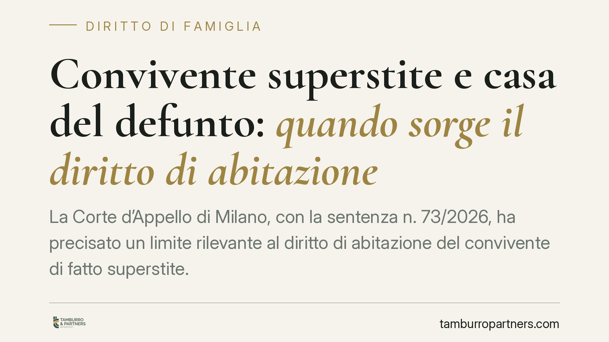

Convivente superstite e casa del defunto: quando sorge il diritto di abitazione
La Corte d'Appello di Milano, con la sentenza n. 73/2026, ha precisato un limite rilevante al diritto di abitazione del convivente di fatto superstite. Il diritto previsto dalla Legge Cirinnà sorge solo se il defunto era proprietario della casa familiare: nulla spetta se egli ne era semplice comodatario o detentore. Una distinzione che incide direttamente sulla tutela abitativa di chi resta.

Il caso e la decisione
Alla morte di uno dei due conviventi di fatto, il partner superstite invoca spesso un diritto a continuare ad abitare la casa in cui la coppia viveva. La legge lo prevede, ma entro confini precisi.
La Corte d'Appello di Milano (sent. 73/2026) ha affrontato un punto finora poco esplorato: cosa accade quando il defunto non era proprietario dell'immobile, ma lo occupava a titolo diverso, ad esempio in forza di un comodato (il prestito gratuito di un bene) o di una semplice detenzione materiale.
La risposta dei giudici è netta. Il diritto di abitazione del convivente superstite presuppone che il defunto fosse titolare di un diritto reale sull'immobile, in primo luogo la proprietà. Se egli era solo comodatario o detentore, quel diritto non può trasmettersi al partner, perché non esisteva un titolo stabile su cui fondarlo.
Inquadramento normativo
La materia è regolata dalla Legge n. 76 del 2016, cosiddetta Legge Cirinnà, all'articolo 1, commi 42 e 43.
Il comma 42 stabilisce che, in caso di morte del convivente di fatto proprietario della casa di comune residenza, il superstite ha diritto di continuare ad abitarvi per un periodo determinato: due anni, oppure per un tempo pari alla durata della convivenza se superiore a due anni, con un tetto massimo di cinque anni. Se con il convivente coabitano figli minori o disabili, il termine minimo sale a tre anni.
Il comma 43 chiarisce che questo diritto viene meno se il superstite cessa di abitare stabilmente l'immobile, oppure se contrae matrimonio, unione civile o instaura una nuova convivenza di fatto.
Il dato testuale è decisivo: la norma parla di convivente "proprietario" della casa. La Corte milanese ha letto questa parola in senso stretto. Il diritto di abitazione è un diritto reale minore, che per sua natura grava su un bene e presuppone un titolo pieno in capo a chi lo trasmette. Dove manca la proprietà, manca il presupposto.
Implicazioni pratiche
La distinzione ha conseguenze concrete per molte situazioni ordinarie.
Se la coppia viveva in una casa intestata al partner poi deceduto, il superstite conserva una tutela: potrà restare per il periodo previsto dalla legge, anche a fronte delle pretese degli eredi.
Se invece l'immobile era, ad esempio, di proprietà dei genitori del defunto e concesso a quest'ultimo in comodato, la situazione cambia radicalmente. Alla morte del comodatario, il diritto di abitazione non sorge. Il superstite si trova senza protezione legale specifica e potrebbe essere chiamato a rilasciare l'immobile.
Lo stesso vale per le situazioni di mera detenzione, in cui il defunto occupava la casa senza un contratto formale o un diritto reale.
Questo rende essenziale verificare, prima ancora che sorga il problema, a quale titolo la coppia occupa l'abitazione. Un dato spesso dato per scontato può determinare l'esistenza o l'assenza di una tutela abitativa.
Segnaliamo anche che la convivenza di fatto, per produrre gli effetti della Legge 76/2016, deve essere documentabile. La registrazione all'anagrafe come coppia convivente agevola la prova dei presupposti applicativi.
Cosa fare in concreto
- Verificate il titolo di godimento dell'immobile. Accertate se il partner è proprietario, comodatario, conduttore o semplice detentore: da questo dipende l'esistenza del diritto di abitazione.
- Formalizzate la convivenza. Procedete alla dichiarazione anagrafica di convivenza, utile a provare la durata del rapporto e ad attivare le tutele di legge.
- Valutate strumenti alternativi. Dove la Legge 76/2016 non copre, considerate testamento, contratto di convivenza o altri assetti che proteggano l'abitazione del superstite.
- Censite la posizione dei terzi proprietari. Se la casa è di familiari del partner, chiarite per iscritto la natura del godimento ed eventuali impegni futuri.
- Agite tempestivamente. Alla morte del convivente, raccogliete subito la documentazione sul titolo abitativo prima di qualsiasi interlocuzione con gli eredi.
Contributo informativo a cura di Tamburro & Partners - Avv. Giuseppe Tamburro. Non costituisce parere legale.
Ogni famiglia ha il suo equilibrio.
Separazione, divorzio, affidamento, assegno: se vuoi un confronto riservato su una specifica situazione, scrivi allo studio. Ti rispondiamo entro un giorno lavorativo.